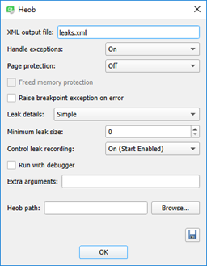
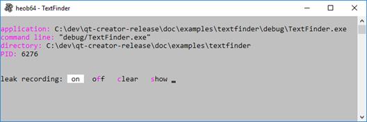
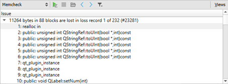

Detecting Memory Leaks with Heob
Qt Creator integrates the Heob heap observer for detecting buffer overruns and memory leaks. You must download and install Heob to run it from Qt Creator.

To run Heob on the currently open project:
- Select Analyze > Heob.
- Select the Heob settings profile to use, or select New to create a new profile.
- In the Heob path field, enter the path to the Heob executable.
- Specify additional settings for running the checks. For more information about the available options, see Specifying Heob Settings.
- Select OK to run Heob.
Qt Creator runs the application, and then it runs Heob in a console window.

Heob raises an access violation on buffer overruns and records stack traces of the offending instruction and buffer allocation. The results are displayed when Heob exits normally.

Specifying Heob Settings
To specify settings for Heob, select Analyze > Heob.
In the Extra arguments field, enter additional arguments for running Heob. To list the available arguments in the Heob console, enter -H in this field and press Enter.
For example, use the -oleaks.html option to record leak data in an HTML file. Together with this option, you can use the -g2 option to group the leaks visually in the file and the -L1024 option to record leak contents up to 1024 bytes in the file. For example, -oleaks.html -g2 -L1024
To save the settings profile, select Save.
To remove a customized settings profile, select the profile, and then select Delete.
The following sections describe the available options in more detail.
Recording Results
The results of the checks are displayed in the Memcheck view and recorded in a file. You can specify the file name in the XML output file field. Heob creates the file in the project directory.
You can use the process identifier (PID) as a variable in the file name. For example, leaks-%p.xml. This injects Heob into the child processes, as well.
Other variables you can use are %P for the parent PID and %n for the application name.
If you use variables, Qt Creator cannot open the file automatically, but you can open it from the project directory.
Handling Exceptions
In the Handle exceptions list, select Off to use the standard exception handler and have the debugger automatically attached if the application crashes. This works only if you register Qt Creator is as a post-mortem debugger by selecting Preferences > Debugger > General > Use Qt Creator for post-mortem debugging.
Select On to use the Heob exception handler that checks the reason and location of the crash and detects whether it occurred because of buffer overrun.
Select Only to disable all Heob functions, except installing the exception handler. If the application crashes, only a stack trace of the crash is displayed. Therefore, this option is mostly useful when using Heob on the console or running it for child processes, as well.
Raising Exceptions on Errors
Select the Raise breakpoint exception on error check box to display errors when the application runs.
If the option is disabled, errors such as double free, free of invalid pointer, and not enough memory just write all collected data into the results file and you will only see them at the end of the application run.
If the option is enabled, the application stops at the error location. This is mostly useful when used with the Run with debugger option, which runs Heob under the debugger.
Protecting Pages
In the Page protection list, select Off to use standard memory allocation functions and enable only memory leak detection.
Select After to place a protected page at the end of each allocated block and throw an exception if it is accessed. Select Before to place a protected page before each allocated block. These options consume memory and slow down the checks, and are therefore recommended only for 64-bit or short-running programs.
Select Freed memory protection to protect all allocation pages when freed, so that their address space can never be used again. This is useful for use-after-free and double-free detection. However, the available memory address space can run out fast for 32-bit programs.
Handling Leak Data
In the Leak details list, determine how to handle the collected leak data when the process exits. Selecting None means that no leak data is collected. If you activate leak type detection, Heob might need more time to collect the data when the process exits.
Select Simple to write all memory that was not freed into the results file.
Select Detect Leak Types to parse all static and global memory blocks for references to the leaks. The reachable blocks are marked reachable and recursively checked for other references. If references are found, the blocks are marked indirectly reachable. The remaining blocks are checked for references to each other and marked either indirectly lost or jointly lost (if the blocks reference each other). The blocks that have no references at all are marked lost. Select Detect Leak Types (Show Reachable) to also record the the reachable blocks in the results file.
Select Fuzzy Detect Leak Types to mark memory blocks reachable or indirectly lost if they have references to any address. This option is useful when used with some custom allocators (such as av_malloc() in ffmpeg) that keep only an address somewhere inside the allocation block and do not refer directly to the start of an allocated block. Select Detect Leak Types (Show Reachable) to also record the reachable blocks in the results file.
In the Minimum leak size list, select the size of leaks to detect in bytes.
In the Control leak recording list, select Off to record all leaks. You cannot change leak recording while it is running.
To start Heob without starting leak recording, select On (Start Disabled). In the Heob console, turn recording on or off, clear all results, or select show to record all current leaks into the results file. Open the file to see its contents before the process exits.
To start leak recording when Heob starts and still have the option to control the recording, select On (Start Enabled).